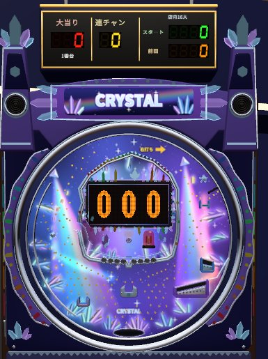
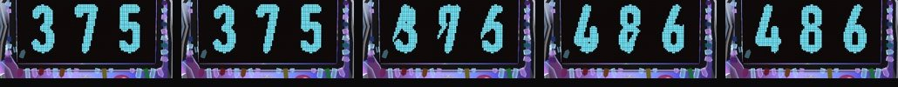
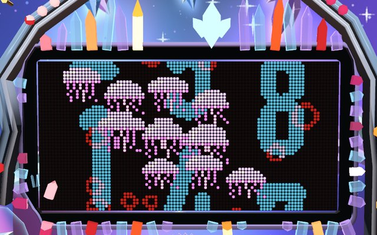
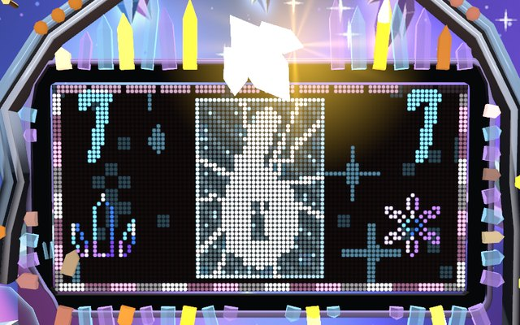

최종 갱신: 2026-11-28 (토)
CRYSTAL

기계 전체 신기종. 돌파형 ST기. 헤소 대박의 절반은 Crystal RUSH(ST 12회)로 직행하고, 나머지 절반은 3R 통상 뒤 시단 50회에서 되돌림을 노린다. 오른쪽 치기 있음. 기복이 심한 상급자용 기계로, 기계를 잡으면 サンド (구슬 대여기)에 「上級者向け・波が荒い台 」(상급자용·기복이 심한 기계)라고 나온다. 섬의 뒷줄(북쪽) 서쪽 끝에 4대.
스펙
대박 확률 1/119.8 RUSH 중 1/8.0 RUSH ST 12회 (Crystal RUSH) 계속률 약 80% 시단 50회 (3R 통상 뒤) 돌입률 약 67% (되돌림 포함) 라운드 10R / 3R (1R 10카운트) 배출량 10R 약 900개 / 3R 약 270개 상구(입구별 반환 구슬) 헤소 3 / 전츄 7 / 어태커 9 / 입상구 3 250개로 도는 횟수 약 49회 (시산, 멈춤 치기 포함) 기계할 약 141% (시산)
※ 돌파형은 첫 대박의 일부만 RUSH에 들어가는 타입. 시단 50회 안에 다시 당첨되는 되돌림은 약 34%. 보더(손익분기 회전수)는 조사 중.
대박 배분
입구 10R (ST) 3R (ST) 3R 통상 (시단 50회)
헤소 5% 45% 50% 전츄 40% 60% 없음
※ 777은 10R, 그 밖의 홀수는 3R ST, 짝수는 3R 통상. 짝수라도 승격 찬스 가 있다. 전츄 대박은 전부 ST.
보도와 전서포
통상 RUSH, 시단
보도 당첨 1/16 9/10 보도 변동 12초 1.2초 전츄 개방 0.15초 ×1회 1.6초 ×2회
치는 법
세기는 자동
대박, RUSH, 시단 중에는 자동으로 오른쪽 치기
왼쪽 치기 긴 못 줄을 따라 왼쪽 위의 풍차로. 길 못은 경사가 급하고, 구슬이 새는 곳이 2군데 있다 오른쪽 치기 오른쪽 어깨 풍차 아래의 스루 게이트, 오른쪽 가운데보다 아래의 전츄, 오른쪽 아래의 가로로 긴 어태커 순
모드 (Crystal RUSH, 시단)
모드 확률 구별하는 법
통상 1/119.8 평범한 테두리. 대기 화면에는 「◆ CRYSTAL ◆ 」가 흐른다 Crystal RUSH 1/8.0 액정 테두리를 빛이 돌고, 윗변에 남은 횟수. 반면의 결정의 꽃이 열리고 빛난다 시단 1/119.8 파란 테두리. 윗변에 남은 횟수
ST 대박 뒤에는 RUSH(ST 12회, 1/8.0). 12회 안에 당첨되면 다시 RUSH, 빗나가면 통상으로 돌아간다
돌입할 때 「クリスタルRUSH! 」(Crystal RUSH!)가 나온다
3R 통상 뒤에는 시단 50회. 오른쪽 치기로 전츄를 노리고, 전츄로 당첨되면 RUSH로
반면과 역물
표시 아래에 결정의 꽃 역물과 경광등. 꽃은 슈퍼 리치 이상에서 조금 열리고, 대박 중과 RUSH 중에는 활짝 열려 빛난다.
반면
결정의 꽃 (봉오리) 결정의 꽃 (열린 모습)
연출 신뢰도
※ 신뢰도는 그 연출이 나왔을 때 대박으로 이어지는 비율 (해석값, 통상 시). 50% 이상과 확정은 빨간 글씨.
보류 색
색 신뢰도
파랑 1.6% 초록 6.8% 빨강 30.4% 금색 63.3% 무지개 확정
리치
연출 신뢰도
노멀 리치 3.1% 슈퍼 리치 25.5% 전회전 확정 최종 결전 (PUSH) 51.7%
예고
색 결정 눈 예고 해파리 떼 예고
전체 (색 무관) 1.3% 17.9% 흰색 0.2% 3.4% 파랑 0.6% 9.8% 초록 1.7% 22.5% 빨강 6.0% 52.1% 금색 22.7% 83.3% 무지개 확정 확정
스텝업 예고
연출 신뢰도
스텝 1까지 4.1% 스텝 2까지 10.2% 스텝 3까지 33.6% 스텝 4까지 66.6% 스텝 5까지 90.9%
의사연
연출 신뢰도
×2 5.7% ×3 28.3% ×4 50.7%
변동 개시
연출 신뢰도
뜸 들이기 1.5% 역회전 3.9% 떨림 12.9% 하나씩 22.5% 플래시 48.5% 낙하 1.8% 빨려 들기 2.0% 오른쪽에서 10.5% 캐릭터가 밀기 41.0%
숫자 도는 방식
연출 신뢰도
거꾸로 1.1% 넘기기 4.8% 드럼 8.4% 셔플 14.2% 결정 0.5%
예조 (위를 달리는 캐릭터)
연출 신뢰도
동료 (3마리) 1.0% 대행진 (6마리) 2.5% 금색 12.5% 무지개 65.5%
리치 중 예고
연출 신뢰도
결정 눈 예고 14.8% 해파리 떼 예고 30.2%
슈퍼 리치 후반
연출 신뢰도
프레임 넘기기 11.4% 덧칠 18.6% 어택 33.9% 결정화 54.5%
리치 끝나는 방식
연출 신뢰도
딱 6.5% 미끄러짐 18.8% 되돌아감 21.7% 흔들흔들 9.4% 막판 정지 29.4%
찬스 눈
연출 신뢰도
311 (뒤쪽 보류가 당첨) 72.7%
확정 연출
무지개 보류, 블랙아웃, 변동 개시 시 경광등, 부활, 프리즈, 전소등
연출 해설
숫자와 도는 방식
숫자는 하늘색 결정 모양의 글자. 평소 도는 방식은 「결정」으로, 숫자가 비스듬히 바뀐다.
CRYSTAL의 숫자 
「결정」 도는 방식
보류
보류 램프는 표시 아래. 금색부터 격열, 무지개는 확정.
예고
결정 눈 예고는 약한 쪽. 작은 결정이 흔들리며 내리고, 가끔 십자로 빛난다
해파리 떼 예고는 뜨거운 쪽. 결정 해파리 떼가 갓을 폈다 오므렸다 하며 오른쪽에서 왼쪽으로 헤엄쳐 지나간다. 뒤에는 거품
색은 둘 다 6단계 (하양, 파랑, 초록, 빨강, 금색, 무지개). 해파리 떼의 빨강부터 격열, 무지개는 확정
예고는 리치 중에도 나온다. 예조는 위쪽 띠를 달리는 작은 결정과 꽃
결정 눈 예고 (금색) 
해파리 떼 예고 (빨강)
리치
리치와 슈퍼의 색은 하늘색. 노멀 리치 연출 방식은 표준과 역회전
슈퍼 리치 후반 유형은 프레임 넘기기, 덧칠, 어택, 결정화
결정화: 가운데 숫자가 얼음 상자에 갇혀 아래부터 언다. 빛이 지나가며 다 얼면 금이 멈췄다가 다시 뻗는다. 부서지면 대박, 안 되면 금이 간 채로 녹는다
슈퍼 중에는 도트 표시의 결정과 꽃이 응원한다. 오른쪽 꽃은 봉오리에서 열리고, 대박이면 만개(꽃잎이 무지개색)해서 돈다
최종 결전은 도트 표시 앞에 PUSH 버튼이 나온다
결정화 (컷)
1. 아래부터 언다 
2. 금 3. 부서진다
경광등
표시 아래 오른쪽에 있는 회전등. 돌면 대박.
대박일 때 도는 타이밍
변동 개시 시 4% 리치 성립 시 18% 당락 시 (리치의 결판) 78%
프리미엄, 숨겨진 요소, 잡학
※ 스포일러 있음. 누르면 열린다
프리미엄 (대박 확정)
연출 내용
블랙아웃 변동 개시 시에 길게 암전되고, 그대로 전회전으로 프리즈 변동 개시와 동시에 전부 멈추고 소리가 사라지며, 번쩍인 뒤 그대로 전회전으로 전소등 액정과 기계의 조명 장식이 전부 꺼지고 소리도 없어지며, 번쩍인 뒤 그대로 전회전으로 변동 개시 시 경광등 회전 맨 처음에 경광등이 돈다 무지개 무지개 보류, 무지개 예고 (결정 눈, 해파리 떼) 전회전 블랙아웃, 프리즈, 전소등 뒤에만 나온다. 333이나 777로 맞는다. 끝까지 돌아 무지개색인 채 멈춘다 부활 슈퍼에서 꽝처럼 보여 준 뒤 당첨
숨겨진 요소
승격 찬스: 짝수로 맞은 대박의 끝에 「昇格チャンス 」(승격 찬스)가 나오고, 맞은 숫자가 다시 돈다. 홀수로 멈추면 「確変昇格!! 」(확변 승격!!)로 RUSH에, 짝수면 「チャンスタイム! 」(찬스 타임!)로 시단 50회. 3R ST의 30%는 짝수로 맞춘 뒤 승격하고, 3R 통상의 40%는 승격에 도전했다가 실패한다
보류 선읽기: 보류는 들어갈 때 진짜 색보다 1~2단계 아래로 보이는 경우가 있다. 기다리는 동안 한 단계씩 올라가고, 다 못 오른 몫은 변동 개시 시의 찬스 업에서 오른다. 변동 개시 시에 흰 보류가 깜빡이기만 하면 가세(페이크)
찬스 존: 선읽기 존. 앞에 보류가 2개 이상 있을 때 나온다. 꽝일 때는 슈퍼 리치가 되는 회차에만 나온다
잡학
찬스 눈 311: 리치 없는 꽝에서 311로 멈추면 금색으로 빛나며 튄다. 우연히 311로 멈추는 일은 없다
RUSH, 시단 중에는 예고, 스텝업, 의사연, 변동 개시 연출이 나오지 않는다
데이터 카운터
데이터 카운터 기계 위에 대박, 연짱, 스타트, 전회의 4개와 가게 안의 인원.